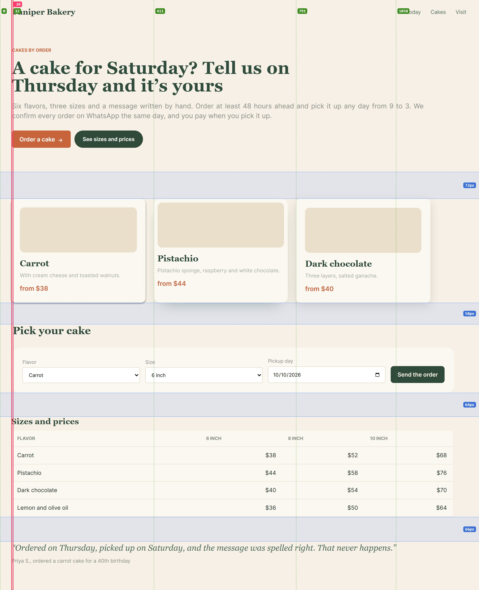
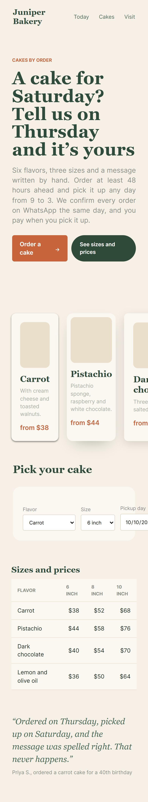
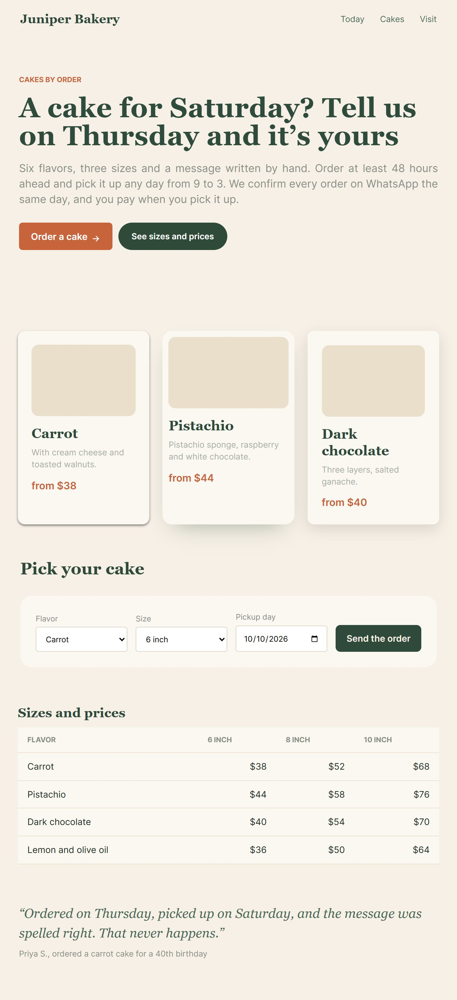

rough
1 fix first2 to fix7 left edges2 near misses
Edges and gaps on the page green: edges in use · red: near misses · blue: gaps between sections

What to fix most important first
- Scrolls sideways at 390pxFix first
166px wider than the screen, starting at
article.card.How to fixColumns withrepeat(auto-fill, minmax(min(100%, 16rem), 1fr)),min-width: 0on flex children, tables inside anoverflow-x: autowrapper. - 2 edges that almost line upFix
30pxinstead of32px(-2px, 3 blocks)34pxinstead of30px(+4px, 3 blocks)
Nobody notices the number; everyone feels the page is crooked.
 How to fixOne container (
How to fixOne container (max-width+margin-inline: auto+ onepadding-inlinetoken) for every section, instead of padding per section. - No rhythm between sectionsFix
Gaps between sections:
72px→58px→64px→66px. Values this close look like mistakes.How to fixOne section spacing token (for example--s-8: 64px), and a bigger one only where the subject really changes.
Phone and tablet


Made by /coleoni-layout · skills.coleoni.com